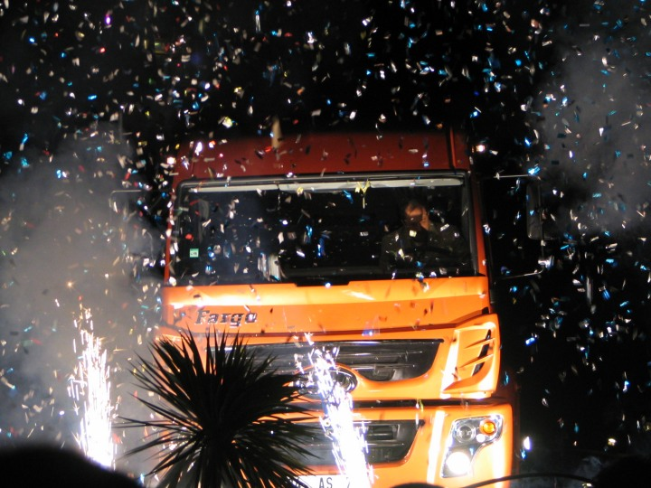

|
Bu modeli piyasaya sürdüðünüz zaman nasýl tepki gördünüz?
Erdinç Karaüç: Ýlk lansmanýmýzý Çeþme'de yapmýþtýk. Bütün bayilerimizi topladýk ve bayilerimizin hepsi þaþýrdý. Yani onlar böyle bir deðiþim beklemiyorlardý. Þimdiye kadar nasýl bir deðiþiklik olduysa onlarý beklediklerini söylediler. Bu, yenilenmiþ eskilerinden tamamýyla farklý modeli karþýlarýnda gördüklerinde onlar da çok þaþýrdý ve çok hoþlarýna gitti.

Aracýn ilk lansmaný Çeþme'de yapýldý ve büyük beðeni topladý.
Anlaþýlan Fargo Hi-Ex artýk hem fiyat hem de tasarým açýsýndan rakiplerini zorlamaya baþladý?
Erdinç Karaüç: Evet, öyle oldu. Tasarým açýsýndan çok iyi bir araç oldu. Hem de yerli üretim olduðundan fiyat konusunda diðer rakiplerimize göre daha makul bir fiyatla satýþa sunar olduk. Bu yüzden rakipler fiyat kýrmak zorunda kaldý.
Ýhracat yapýyor musunuz?
Erdinç Karaüç: Biz daha çok iç piyasayla yönelik çalýþýyoruz. Ancak az da olsa Orta Doðu ülkelerimize ihracatýmýz söz konusu. Firma daha yeni yeni toparlanýyor. Bu konuda bir atýlým yapmak amacýndayýz.
Geleceðe yönelik hedefleriniz nelerdir?
Erdinç Karaüç: 2004 yýlýnda bu aracý çýkarttýk. Pazar payý açýsýndan biz bu piyasanýn lideriydik. Fakat yýllar geçtikçe ciddi rakipler geldi. 8 tondan 25 tona kadar çeþitli modeller çýktý.. Þimdi biz yeniden birinciliðe yükselmek için çalýþmalara devam edeceðiz.
Sekiz ay gibi kýsa bir sürede konusunda uzman firmalarla sýký bir iþbirliði yaparak yeni bir aracý piyasaya çýkartabilmeniz örnek alýnmasý gereken durum. Bu konuda eklemek istedikleriniz nelerdir?
Erdinç Karaüç: Bir ürünün geliþtirmesi ve tasarýmýnda, fabrika þartlarý veya elinizdeki imkânlar deðil müþterinin isteði belirleyici olduðundan, sektördeki tüm imkânlarý bilmek ve araþtýrmak zorundasýnýzdýr. Ayrýca günümüzde bir ürünün gerçekleþtirme süresi de göz ardý edilemeyeceðinden her þeyi kendi bünyeniz içinde yapýlmasýný bekleyemezsiniz.
Bu projede takip ettiðimiz aþamalarý ve tecrübeleri göz önüne aldýðýmýzda, yeni ürün geliþtirirken dikkat edilmesi gereken önemli konularý þöyle sýralayabiliriz:
1- Çözüm ortaklarýnýn tespiti: Burada en önemli faktör, projede birlikte çalýþacaðýnýz firmalarý tespit etmek. Bu konuda doðru karar verebilmek için sektördeki geliþmeleri yakýndan takip etmek gerekmektedir. Kapýmýzý tanýtým için gelen tüm firmalara açtýk. Çünkü bu, bilgiye açýk olmanýz demektir. Projede çalýþtýðýmýz bazý çözüm ortaklarýmýzý bu yolla tanýdýk. Bize gelemeyenleri ziyaretine biz gittik yeteneklerine göre firmalarý tespit ettik.
2- Takým kurmak: Firmalarýn yeteneklerine göre projede oynayacaklarý rolleri hazýrlamak, hedefleri, görevleri ve beklentileri açýk olarak belirlemek ve benimseterek bir takým oluþturmak.
3- Koordinasyon: Çözüm ortaklarýmýz ile ASKAM'daki ekibimizin hýzlý ve uyumlu olarak çalýþmasýný, koordinasyonunu saðladýk. Burada data yönetimi çok önem taþýmaktadýr; Proje çýktýlarýnýn dijital verilerden oluþtuðu ve ulaþým yolu olarak firma içi network ile internetin kullanýldýðý göz önüne alýnýrsa, bu datalarýn revizyonlarýnýn kullanýcýlara doðru olarak ulaþtýrýlmasý ve koordinasyonun ne kadar önemli olduðu ortaya çýkmaktadýr. Bu konuda mutlaka SMARTEAM benzeri bir ürün veri yönetimi yazýlýmýna ihtiyaç duyacaksýnýz.
Tasarým ve ürün geliþtirme konusunda kariyer yapmayý ve kendini geliþtirmeyi düþünen gençlere neleri tavsiye edersiniz?
Erdinç Karaüç:
- Önce kendi yeteneklerinizi tanýyýn ve buna uygun bir eðitim almaya çalýþýn.
- Sevdiðiniz bir sektörde çalýþýn, zira iþ hayatýnýzda karþýlaþacaðýnýz zorluklarý ancak bununla yenebilirsiniz.
- Gerçekleþtirmek istediðiniz bir hedefiniz olsun.
- Bilgiye ve geliþmeye açýk olun, bilgiyi paylaþýn.
- Kendiniz sorgulayýn, yaptýðýnýzý yeterli görmeyin ve daha iyisini arayýn.
- Herkesten farklý bir yönünüz olsun; Sýradan deðil farklý insanlar deðiþimi gerçekleþtirebilirler.
- Sabýrlý olun, sýranýn size geleceði zamaný bekleyin, bu zaman içinde kendinizi geliþtirin ki oyuna girdiðinizde donanýmlý ve hazýrlýklý olabilesiniz.
- Sosyal aktivitelerde bulunun, çok insanla tanýþýn burada öðrenecekleriniz, takým kurmada ve yönetmede size faydalý olacaktýr.
ASKAM hakkýnda:
Kurulduðu günden itibaren faaliyetlerine Chrysler Kamyon Ýmalat ve Ticaret A.Þ. ticari unvaný ve Dodge-Desoto-Fargo markalarý ile devam eden þirket, Amerikan Chrysler ile Alman Daimler Benz birleþmesi sonucu unvan deðiþikliðine giderek 2002 Ocak ayýndan itibaren ASKAM unvanýný alarak, bünyesinde bulunan Fargo ve Desoto markalarý ile üretimini sürdürdü. Haziran 2003'te, Çiftçiler Holding'in þirket hisselerini tek baþýna devralmasýyla yeniden yapýlanma dönemine giren ASKAM, üretim ve ticari faaliyetlerini iki ayrý þirket çatýsý altýnda topladý. Desoto ve Fargo markalarýyla pazara sunduðu kamyon ve kamyonetlerin üretimi Çayýrova-Gebze fabrikasý ASKAM Kamyon Ýmalat ve Ticaret A.Þ. tarafýndan; ticari faaliyetleri (tüm yurtiçi, yurtdýþý satýþlar, pazarlama ve satýþ sonrasý hizmetleri) ise ASKAM Otomotiv San. ve Tic. A.Þ. tarafýndan yürütülüyor. (www.askam.com.tr)
Ýlgili haber:
09-09-2005 > ASKAM tarafýndan üretilen yeni kamyon modeli "Fargo Hi-Ex" þoför ve yolcu için maksimum konfor için dizayn edilmiþ çift yataðý ve yataklarýn olduðu bölümde en yüksek taban-tavan mesafesi sunuyor. Proje boyunca 70 mühendis 300 bin saat çalýþtý
|